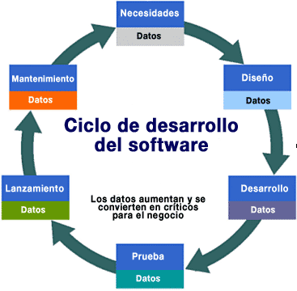

Análisis de requisitos
Extraer los requisitos de un producto de software es la primera etapa para crearlo. Mientras que los clientes piensan que ellos saben lo que el software tiene que hacer, se requiere de habilidad y experiencia en la ingeniería de software para reconocer requisitos incompletos, ambiguos o contradictorios. El resultado del análisis de requisitos con el cliente se plasma en el documento ERS, Especificación de Requerimientos del Sistema, cuya estructura puede venir definida por varios estándares, tales como CMM-I. Asimismo, se define un diagrama de Entidad/Relación, en el que se plasman las principales entidades que participarán en el desarrollo del software. La captura, análisis y especificación de requisitos (incluso pruebas de ellos), es una parte crucial; de esta etapa depende en gran medida el logro de los objetivos finales. Se han ideado modelos y diversos procesos de trabajo para estos fines. Aunque aun no está formalizada, ya se habla de la Ingeniería de Requisitos. La IEEE Std. 830-1998 normaliza la creación de las Especificaciones de Requisitos Software (Software Requirements Specification).
Diseño y arquitectura
Se refiere a determinar como funcionará de forma general sin entrar en detalles. Consiste en incorporar consideraciones de la implementación tecnológica, como el hardware, la red, etc. Se definen los Casos de Uso para cubrir las funciones que realizará el sistema, y se transforman las entidades definidas en el análisis de requisitos en clases de diseño, obteniendo un modelo cercano a la programación orientada a objetos.
Programación
Reducir un diseño a código puede ser la parte más obvia del trabajo de ingeniería de software, pero no es necesariamente la porción más larga. La complejidad y la duración de esta etapa está intimamente ligada al o a los lenguajes de programación utilizados.
Pruebas
Consiste en comprobar que el software realice correctamente las tareas indicadas en la especificación. Una técnica de prueba es probar por separado cada módulo del software, y luego probarlo de forma integral,para así llegar al objetivo. Se considera una buena practica el que las pruebas sean efectuadas por alguien distinto al desarrollador que la programó, idealmente un área de pruebas; sin perjuicio de lo anterior el programador debe hacer sus propias pruebas. En general hay dos grandes formas de organizar un area de pruebas, la primera es que esté compuesta por personal inexperto y que desconozca el tema de pruebas, de esta forma se evalúa que la documentación entregada sea de calidad, que los procesos descritos son tan claros que cualquiera puede entenderlos y el software hace las cosas tal y como están descritas. El segundo enfoque es tener un area de pruebas conformada por programadores con experiencia, personas que saben sin mayores indicaciones en que condiciones puede fallar una aplicación y que pueden poner atención en detalles que personal inexperto no consideraría.
Documentación
Todo lo concerniente a la documentación del propio desarrollo del software y de la gestión del proyecto, pasando por modelaciones (UML), diagramas, pruebas, manuales de usuario, manuales técnicos, etc; todo con el propósito de eventuales correcciones, usabilidad, mantenimiento futuro y ampliaciones al sistema.
Mantenimiento
Mantener y mejorar el software para enfrentar errores descubiertos y nuevos requisitos. Esto puede llevar más tiempo incluso que el desarrollo inicial del software. Alrededor de 2/3 de toda la ingeniería de software tiene que ver con dar mantenimiento. Una pequeña parte de este trabajo consiste en arreglar errores, o bugs. La mayor parte consiste en extender el sistema para hacer nuevas cosas. De manera similar, alrededor de 2/3 de toda la ingeniería civil, arquitectura y trabajo de construcción es dar mantenimiento.
